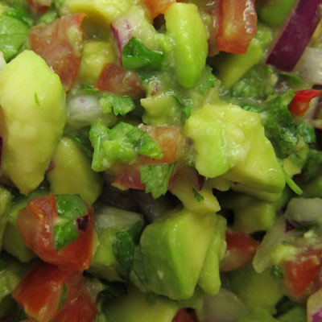

I had the pleasure of spending a crisp, sunny day in Kawangware, NRB cooking and chatting with Kilonzo of the Suftura as he prepared a gourmet, sit-down african sausage dinner for 28 pals.
When I first invited Suftura to be on the show, I was told that Kilonzo was the guy I wanted to talk to. Then Kilonzo emailed his response: "i'm way into it, but i don't want to talk about it, i wanna do it." To actually cook with a Kilonzo was a dream come true.

Kilonzo prepared a salad of tomatoes, onians, corriander,grilled guacamole and cayene (it's as good as it sounds!). I jokingly called it "1-hour Salad" because that's how long he worked on it. The fresh tomatoes were slowly smoked over woodchips in the grill, and when they were softened, Kilonzo separated out the seeds which he reduced into a smoky jam. The tomatoes were cut into strips to put on the salads. As the day meandered, the guacamole finally went on the grill after dark. I was on flashlight duty while Kilonzo checked for the perfect grill marks. Finally, they were all tossed briefly into the blender
I wrote up a streamlined adaptation of his recipe that requires much less time and serves 6 people instead of five ,times that amount.
In addition to the grilled blended salad, Kilonzo served african sausage with tartar sauce loaded with lemon pieces, and peanut-buttered ugali. Dinner was served close to midnight, but it was a party so nobody cared.
We left that night (technically, early the next morning) with full bellies, new cooking tips, and nearly 5 hours of footage. I'm considering renaming the show "Cooking with Suftura".
Ola!